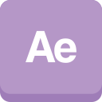

Alfano Angelo
Huidige motivatie
Als werkzoekende met einde van traject BeCode ben ik op zoek
naar een job binnen
het webdevelopment. Ik ben een bijzonder enthousiaste
persoon met een sterke
ambitie en een grote kennis van zaken. Woorden zoals
front-end, back-end en development
zijn me
op het
lijf geschreven
. Verder heb ik ook een creatieve geest en kan ik met abstract,
complexe en nieuwe
ideeën uit de hoek komen.
meer
{kind=link}
{kind=link}
{kind=link}
{kind=link}
Werk Ervaring
Junior Developer
Deelnemen aan BeCode leek mij een ideale gelegenheid mij opnieuw te gaan verdiepen in de wereld van van webdevelopment. HTML, CSS, Javascript, PHP zijn enkele van de webtalen waar ik me op dit moment mee bezig hou.
Einde van traject kunnen we gebruik maken van 2 maanden zelfstandig werken. Dit houdt in dat je je als persoon kan verdiepen in een skill, tool, waar je goed in wilt worden.
Bij BeCode zijn we niet zomaar studenten maar werden we aangenomen bij het bedrijf als Junior-Developers.
Projecten:
- Project- Restaurant website
- Project- CineSASS
- Project- Pokedex
- Project- Birthday App Dirk
- Project- Lost:Society
Technologies used:
- HTML
- BOOTSTRAP
- CSS
- SASS
- Javascript
- Jquery
- PHP
- Laravel
- Ajax
- Linux
ICT-PC technieker
Als technieker bij VBC verzorgde ik een goede werking van diverse computers. deze moesten voornamelijk gerepareerd worden en voldoen aan de noden van de klant. De Job was niet extreem relevant webdevelopment maar zeker een plus bij het ontwikkelen van soft-skills.
Technologies used:
- Active Directory
- Remote Desktop
- Windows 10
- MDT Deployment
Senior, Expert Telenet
De hoofdtaak bestond eruit een groep van 10-15 mensen te begeleiden in hun technisch gesprek. Alle klanten waren steeds van telenet, deze hadden meestal een probleem met ofwel hun internet verbinding, ofwel televisie.
De coaching werd vooral voorzien om soft-skills te trainen en een goede aanpak en structuur te hebben in hun gesprek.
Als uitgangspunt calls meeluisteren en beoordelen, werd er ook gekeken hoe de aanpak was bij verkoop.
Grootste uitdaging hier?
Training geven .. dit omtrend WIGO.
Ik moest de werkvloer toelichten wat WIGO is en hoe ze
het konden gaan
gebruiken in verkoopsgesprekken.
waarom was dit uitdagend?
Het uitleggen
voor een groep van mensen die je
niet goed kent, niet de makkelijkste taak.
Technologies used:
- MS Word
- MS Excel
Grafisch-onterwerper & PC-Technieker
Het maken van grafische beelden voor klanten, dit kon verschillen soms was het een poster dan kon het een menu kaart zijn voor een lokale restaurant. Terwijl ik dit deed stond ik ook in voor het repareren van computers die steeds binnegebracht werden. Tevens moest je natuurlijk ook producten uit het assortiment van de winkel kunnen verkopen.
Technologies used:
- Premiere
- After-Effects
- Indesign
- Print-media technieken
Grafisch-onterwerp / Web Developer
In eerste instantie stond ik in voor het ontwerp van een catalogus van kant en klare uitgetekend woningen (sleutel op de deur).
Ook deed ik het beheer van de website, werden er verschillende interne websites gemaakt bv. via een interne website broodjes bestellen, etc ..
Projecten:
- Ontwerp- 3D House 1
- Ontwerp- 3D House 2
{kind=link}
{kind=link}
Technologies used:
- Cinema4D
- Photoshop
- Indesign
- Notepad++
- Filezilla FTP
- PYTHON
- HTML
- CSS
- Wordpress
Skills & Tools
Web-Development
- HTML
- CSS • Bootstrap • Sass
- Javascript • Jquery • JSON w
- PHP • Laravel
- MySQL
- CMS • Wordpress • Joomla
Graphics & motion
-
 Adobe
Photoshop
Adobe
Photoshop
- Adobe Illustrator
- Adobe Indesign
- Adobe Premiere
- Adobe After Effects
Others
- Unity
- Cinema4D
- Git
- Maya
- Windows
- Linux
- Terminal
- Marketing
- Sales
- Solidworks
- E-Plan
Languages
- Nederlands (Moedertaal)
- Engels (Professioneel)
Interests
- Gaming
- Developing
- Design
- Tech